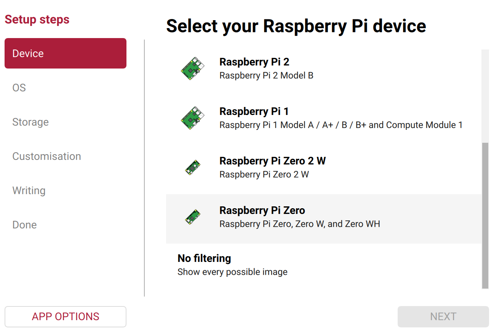

Prepare your
SeedSigner
Download it, check it, put it on the card. About 15 minutes.
Download the firmware, check it against SeedSigner's published hash, write it to a microSD. About 15 minutes.
Software comes only from SeedSigner's own GitHub checked locally in your browser this page loads nothing from any other server
Which one did you buy?
It is on your order. The smartcard one has a card slot.
Premium and Plus take the stock SeedSigner image. Plus Smartcard takes the Satochip fork.
1 Download the software
One file gets saved to your computer.
One file, straight from SeedSigner's own release page. Bitsaga hosts nothing.
Exact URL
Your browser's download bar shows this comes from SeedSigner's own GitHub account, not from Bitsaga.
Open the release page and compare the filename yourself.
Fetch and hash it without this page
Different board? Every official image is at github.com/SeedSigner/seedsigner/releases. This page only covers the Raspberry Pi Zero v1.3, which is what Bitsaga ships.
2 Check it is genuine
Drop the file you just downloaded here
Drop the image file here
It stays on your computer.
Read locally, hashed in this tab. Nothing is sent anywhere.
What this is compared against
- Expected hash
- Computed hash
- not yet
- Signed by
- Fingerprint
Check the signer against sources Bitsaga does not control
Do not trust Bitsaga's checkmark
Check the signature yourself
Rebuild it from source and get the same bytes
SeedSigner's build is reproducible, so the hash above is not something you have to take anyone's word for. Anyone can derive it from the source. That is the strongest link in this whole chain, and it is the reason this page is a guide rather than an authority.
Audit this page against its own signed manifest
3 Put it on the card
You are on a phone. This step needs a computer. Everything up to here is done, so pick it up on a laptop when you can.
Use Raspberry Pi Imager. It is free, and it checks the card afterwards.
Raspberry Pi Imager, custom image, verify-after-write on.
Get Raspberry Pi Imager Grab it while the file downloads.
- Open the app.
- Device: scroll down, choose Raspberry Pi Zero. Not Zero 2 W.
- OS: scroll to the bottom, choose Use custom.
- Pick the exact file you just checked.
- Storage: choose your card.
- Write.

Verify the card, not just the file
Writing can go wrong after a correct file. Imager verifies by default; confirm it did. On the smartcard firmware the device itself can verify a freshly written card under MicroSD Card Tools.
4 Start it up
Put the card in and plug in the power.
Insert the card, power it. First boot takes roughly twenty seconds.
Your screen needs one setting changed
Your model has the bigger screen, so the picture looks wrong at first. Fix it once and it stays fixed.
The 320x240 panel is not the default. Set it once, with persistence on, or you will redo it every boot.
- Go to Settings.
- Turn on Persistent settings first. Without this, the next step is forgotten every time you switch off.
- Then Advanced, then Hardware, then Display type.
- Choose st7789 320x240.
Skip the menus: put a small file on the card instead
Before you eject the card, save a file called settings.json in the top level of
the card containing exactly this. It sets the same two options at first boot.
Type it yourself rather than taking ours. It is two lines and it means you are not trusting a file from your seller on the device that will hold your keys.
Practise first
Use a throwaway seed until this feels easy.
Rehearse the full flow with a throwaway seed first.
Practise in the simulator, in your browser, no hardware needed.
Before you put real value behind it
- Generate the seed with your own entropy, dice rather than the camera, and check the entropy indicator.
- Confirm the xpub on a second, independent path before you accept any receive address.
- Send a small test amount and spend it back before funding properly.
- Inspect the hardware. Verified firmware says nothing about a tampered board.
The honest ceiling
Software cannot verify hardware. Reproducible builds push the boundary a long way but they do not remove it, and no page can prove itself. Everything here is designed so you can check it with tools you did not get from us. That is the most this can honestly offer.
Want a hand?
I do guided setup calls. We go through this together on a screenshare, then set up your seed properly.